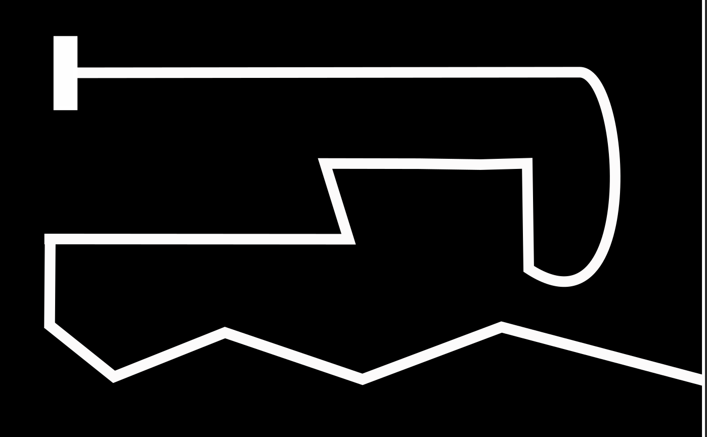

CS684: Embedded System Course
Lab 3: Lustre/Heptagon implementation of Line Follower
Aim:
In this lab, the robot should start from start position and reach to destination by using Line Following. In Lab 2 you have already implemented Line Following algorithm using Heptagon. In this lab you will implement the algrithm on the Hardware and see the results.
Description:

Robot has to travel from rectangle block (point A) to end of zig-zag path (point B) using white line following. Make sure that robot doesnot leave the line.
Line following: The arena provided to you is made up of curved and straight paths for the robot. To traverse the arena, the robot has to do line following depending on its position. Hence an algorithm has to be developed for Line following in Heptagon.
Resources:
-
AlphaBot Drivers: Go through the slides which were presented in the class to know more about AlphaBot. All the APIs which will be required for the project implementation are added in this folder along with example .ino file. Go through the various components and check the results.
-
Heptagon-Embedded Integration: Go through the slides which were presented in the class to know more about Integration. Refer the folder given. It consist of following files and folders:
heptagonFolder:line_follower.eptcontaining the logic of the code (Discrete Controller).supervisorFolder:supervisor.ino,alphabot_drivers.cppandalphabot_drivers.hto work with the Robot.integrate.shfile: to simulate and do the book keeping work.
Submission Instructions:
- You have to upload
tar.gzfile.-
Heptagon Projectfolder: It should contain followingHeptagonFolder: Containing the heptagon implementation of the logic.Integrate.shfile: to generate the c files from heptagon.SupervisorFolder: it containssupervisor.inofile and auto generated c files from the heptagon.
-
Readme.txtfile:- Youtube link of the video - shoot the working of the robot moving from Point A to Point B.
-
Contribution.txtfile: stating detailed contribution of each member
-
- Compress the folder and rename it as
<GroupName>_Lab_3.tar.gz - Upload the file on Moodle
- There should be only one submission per group. Member having highest roll no should do the submission.